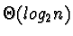

|
A binary search tree
builds on the concept of the binary search algorithm.
Binary search trees, often called ``BSTs,'' retain the excellent
search speed of the binary search of an array but, because of their
dynamic structure, also enjoy more efficient insertion and deletion
operations. Whereas to insert or delete an item from a sorted array
requires an expensive ripple-shift
operation, to add or delete an item from a BST requires only a few
simple pointer operations and a call to the dynamic memory allocator.
A BST is a special type of binary tree.
Binary trees are data structures in which values are stored in nodes. In a binary tree every node
in has zero, one, or two children nodes in addition to its value.
Child nodes are represented graphically as distinct nodes connected to
but lower than their parent node. Children nodes of the same
parent are sometimes called siblings.
Since a node in a binary tree can have, at most, two children, we call
the children the right and left child. The node at the top of the
tree with no parent is called the root node.
BSTs have the added property that given a node, X, the child node
(if any) to X's left has a smaller values than X whereas the child
node to X's right (if any) has a larger value than X.
In order to search for a particular value in a BST, traverse the tree
starting from the root node. By comparing each node's value
with the one for which you are searching, and then moving in the
correct direction (left or right depending on the result of the
comparison) it is possible to quickly determine whether a target value
is in the tree or not.
Like comparisons in the binary search, each comparison in a
binary search tree (and subsequent traversal) results in a reduction
the number of items yet to be searched by one-half if the tree is balanced.
A balanced BST is one where every node has either two children or
none; this is the ideal shape for a BST. A degenerate binary
search tree
is one in which every node has only one child. This undesirable type
of BST looks and behaves like a linked-list.
Because of it's inefficient shape, a degenerate BST suffers from
lackluster search performance. A degenerate tree often results from
creating a BST out of a set of values that is sorted as we will see in
the next section.
The complexity of the average search operation for data in a balanced
BST is

which, you will note, is the same complexity
as a search operation in a sorted array using the binary search
algorithm. The worst case search performance of the BST data
structure is O(n) because of the possibility of examining every node
when searching a degenerate tree.
|